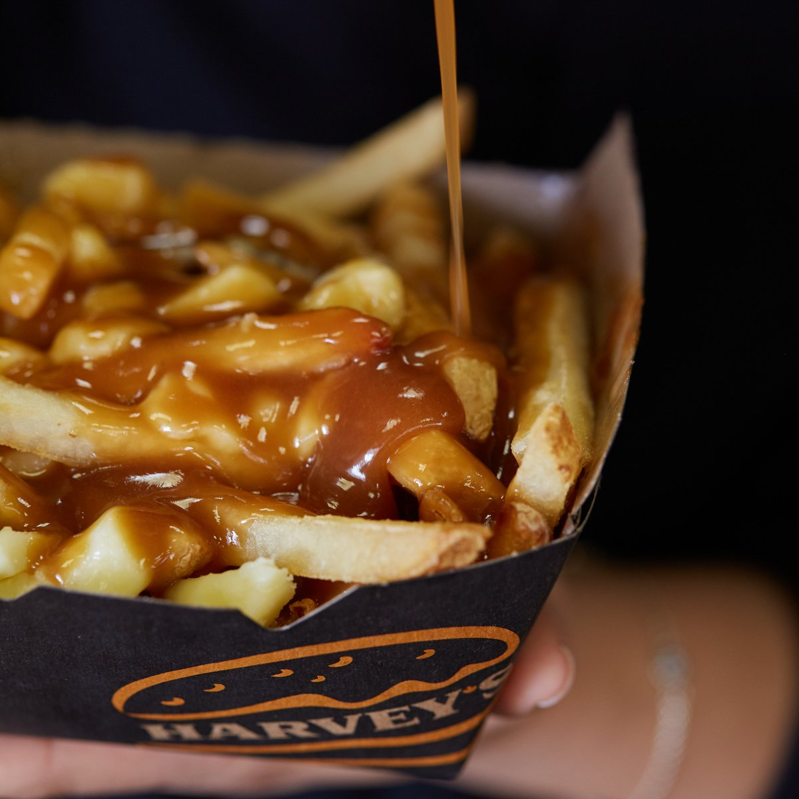
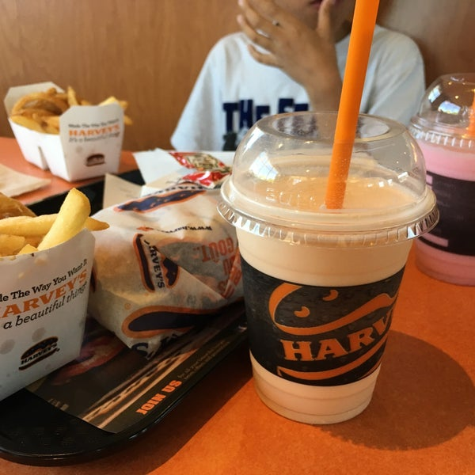
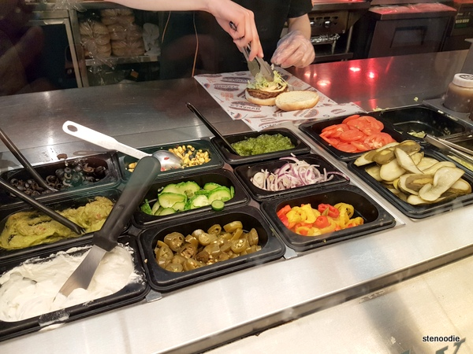

Harvey's
Harvey’s is currently the best fast food chain in Canada. Harvey’s is a 100% Canadian owned company who sources all of their beef, poultry, vegetables, and dairy from local Canadian farms. I think Harvey’s is the superior fast food choice because they allow their guests to create their very own burger with whatever toppings they prefer. With most other fast food chains, you are limited to the hamburgers and wraps that already have pre chosen toppings. However, at Harvey’s, you can customize your hamburger however you please, from the patty choice to the condiments. In addition, Harvey’s has some excellent milkshakes that put most other restaurants to shame. They are delicious, not too runny and not too thick, and make the best dipping “sauce” for french fries! Lastly, Harvey’s has some of the best poutine available. It is a classic Canadian staple that many fast food chains like Mcdonalds or Tim Hortons still botch. But Harvey’s? They have it right! With its proper beef gravy, soft but-not-soggy fries, and squeaky cheese curds, Harvey’s poutine is one of the best being served.
  wendys

Wendys focuses on serving fresh high quality food for a fair price. They have a diverse menu, with breakfast items to lunch/dinner items. Wendy’s food is delicious, the frosty-fry combo, where you replace your drink with a frosty then dip your fries is one of the best things you can get from any fast food restaurant. Their fries and chicken are of higher quality than most other food chains, along with their square burger patties adding their own touch to the burgers. Other food chains serve food that tastes and looks fake. At wendys you feel like you're eating good quality food that won't leave your stomach turning and hurting at the end of the day. They have quick and friendly service, so your overall experience is pleasant.